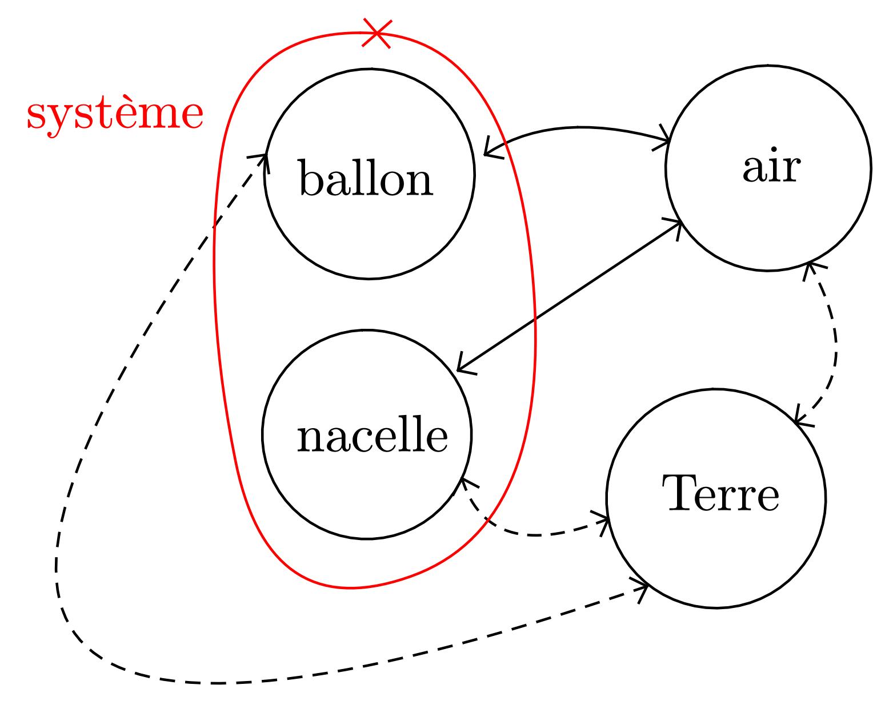
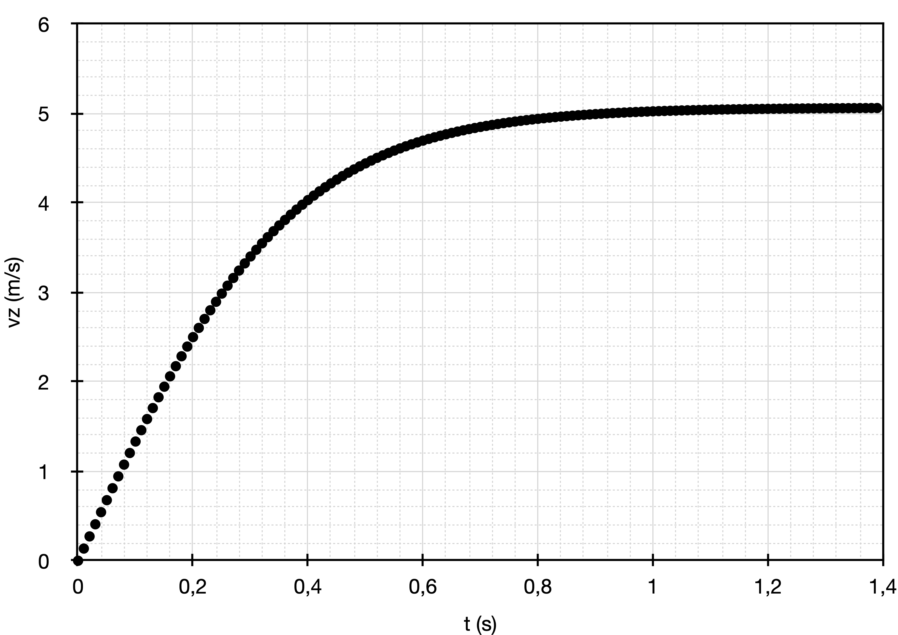

Un ballon sonde, en caoutchouc mince très élastique, est gonflé à
l’hélium. Une nacelle attachée au ballon emporte du matériel
scientifique afin d’étudier la composition de l’atmosphère.
En montant, le ballon grossit car la pression atmosphérique diminue. Sa
paroi élastique finit par éclater à une altitude généralement comprise
entre 20 et 30 kilomètres. Après éclatement, un petit parachute s’ouvre
pour ramener la nacelle et son matériel scientifique au sol.
Il faut ensuite localiser la nacelle, puis la récupérer pour exploiter
l’ensemble des expériences embarquées.
L’objectif de cet exercice est d’étudier la mécanique du vol du ballon sonde à faible altitude (sur les premières centaines de mètres). On peut alors considérer que l’accélération de le pesanteur $\vec{g}$, le volume du ballon $V_b$ et la masse volumique $\rho$ de l’air restent constants. On modélisera la valeur $f$ de la force de frottement de l’air sur le système étudié par l’expression : $f = K \cdot \rho \cdot v^2$ où $K$ reste constant pour les altitudes considérées et $v$ est la vitesse du centre d’inertie du système {ballon + nacelle}. On supposera qu’il n’y a pas de vent (le mouvement s’effectue donc dans la direction verticale) et que le volume de la nacelle est négligeable par rapport au volume du ballon.
Le système {ballon + nacelle} est étudié dans un référentiel terrestre considéré comme galiléen.
- Données
- $\rho = \pu{1,22 kg.m-3}$, $V_b = \pu{9,0 m3}$, masse du ballon (enveloppe + hélium) : $m = \pu{2,10 kg}$, masse de la nacelle vide : $m’ = \pu{0,50 kg}$.
Condition de décollage du ballon
- Établir le diagramme objets–interactions de la situation lorsque le système {ballon + nacelle} vient juste de quitter le sol.
Décrire (direction, sens) chacune des forces modélisant les interactions.
Réponse
Interactions :
-
Système – Terre, modélisée par le poids $\vec{P}$, force verticale dirigée vers le bas.
-
Système – Air, modélisée par la poussée d’Archimède $\vec{\Pi}$, force verticale dirigée vers le haut
Comme on considère l’instant juste après le décollage du ballon, on considère que sa vitesse est encore nulle. La force de frottement fluide est donc nulle.
- Donner l’expression littérale de la valeur $\Pi$ de la poussée d’Archimède.
Réponse
La valeur de la poussée d’Archimède est égale au poids du fluide déplacé : $\Pi = \rho_{\text{air}} V_b\, g$
- Soit $M$ la masse du système. Donner l’expression du vecteur accélération $\vec{a}_G$ du centre d’inertie du système.
Réponse
Deuxième loi de Newton
$$ M\, \vec{a} = \vec{P} + \vec{\Pi} = M\, \vec{g} + \rho_{\text{air}} V_b\, (- \vec{g}) $$
Donc $$\vec{a} = \left( 1 - \frac{\rho_{\text{air}} V_b}{M} \right)\, \vec{g}$$ L’accélération est donc un vecteur colinéaire au champ de pesanteur $\vec{g}$.
- La vitesse initiale du ballon étant considérée, nulle, à quelle condition doit satisfaire le vecteur accélération pour que le ballon puisse s’élever ?
On pourra projeter la relation obtenue sur un axe vertical $(Oz)$ orienté vers le haut.
Réponse
Le vecteur accélération doit être vertical (ce qui est assuré par la colinéarité avec $\vec{g}$), non nul et dirigé vers le haut. Donc $$a_z > 0$$
- En déduire une condition sur $M$ pour que le vol soit possible (on ne demande que l’expression littérale ici).
Réponse
$$ a_z = \left( 1 - \frac{\rho_{\text{air}} V_b}{M} \right) (- g) \Leftrightarrow a_z = \left( \frac{\rho_{\text{air}} V_b}{M} - 1 \right) g $$ donc $$ a_z > 0 \Leftrightarrow \frac{\rho_{\text{air}} V_b}{M} - 1 > 0 \Leftrightarrow M < \rho_{\text{air}} V_b $$
- En déduire la masse maximale de matériel scientifique que l’on peut embarquer dans la nacelle.
Réponse
$M_{\text{max}} = \pu{1,22 kg.m-3} \times \pu{9,0 m3} = \pu{11,0 kg}$ Or $M_{\text{max}} = m + m’ + m_{\text{science}}$ donc $m_{\text{science}} = M_{\text{max}} - m - m’$.
A.N. $m_{\text{science}} = \pu{11,0 kg} - \pu{2,10 kg} - \pu{0,50 kg} = \pu{8,4 kg}$
Ascension du ballon
- À partir de la question (3) et en conservant l’axe défini à la question (4), montrer que l’équation différentielle régissant le mouvement du ballon après son décollage peut se mettre sous la forme :
$$
Av_z^2 + B = \dfrac{\mathrm{d} v_z}{\mathrm{dt}}$$
et donner les expressions de $A$ et $B$.
La masse de matériel embarqué étant de $\pu{2,0 kg}$, l’application numérique donne $A = - \pu{0,53 m-1}$ et $B = \pu{13,6 m.s-2}$.
Réponse
Le diagramme objets-interactions est identique à celui introduit à la question (1) mais la modélisation de l’interaction avec l’air est maintenant différente : il faut prendre en compte la poussée d’Archimède mais aussi la force de frottement fluide. $$ M\, \vec{a} = \vec{P} + \vec{\Pi} + \vec{f} $$ Comme $\vec{P} = M\, \vec{g} = - Mg\, \vec{k}$, $\vec{\Pi} = \rho_{\text{air}} V_b g\, \vec{k}$ et $\vec{f} = - K \cdot \rho \cdot v^2\, \vec{k}$ (puisque la force de frottement fluide est opposée à la vitesse), $$ M a_z = - Mg + \rho_{\text{air}} V_b g - K \cdot \rho \cdot v_z^2 $$ ou $$ a_z = \left( \dfrac{\rho_{\text{air}} V_b}{M} - 1 \right) g - \dfrac{K \cdot \rho}{M} v_z^2 $$ Comme $a_z = \dfrac{\mathrm{d}v_z}{\mathrm{dt}}$, l’équation peut s’écrire $$ \dfrac{\mathrm{d}v_z}{\mathrm{dt}} = Av_z^2 + B $$ si $A = - \dfrac{K \cdot \rho}{M}$ et $B = \left( \dfrac{\rho_{\text{air}} V_b}{M} - 1 \right) g$.
Une résolution numérique de l’équation différentielle permet de tracer l’évolution de la composante $v_z$ de la vitesse en fonction du temps.
- Commenter l’allure de la vitesse.
Réponse
On constate la présence de deux régimes :
-
Un premier régime durant lequel la vitesse augmente mais de moins en moins vite (coefficient directeur des tangentes à la courbe de moins en moins grands) : c’est le régime variable.
-
Un second régime durant lequel la vitesse n’évolue plus : c’est le régime permanent constant.
- Le mouvement est-il uniformément accéléré ?
Réponse
La vitesse ne varie pas linéairement, l’accélération n’est donc pas constante et le mouvement n’est pas uniformément accéléré.
- Que peut-on dire des forces auxquelles est soumis le système lorsque ce dernier est dans le régime permanent constant ?
Réponse
Puisque la vitesse n’évolue plus, le mouvement est rectiligne et uniforme ; les forces auxquelles est soumis le système se compensent donc alors.
Remarque : C’est la force de frottement fluide qui est responsable de la présence du régime permanent constant : lorsque la vitesse augmente, la force de frottement fluide augmente (et plus rapidement puisqu’elle est proportionnelle au carré de la vitesse) jusqu’à devenir égale à la poussée d’Archimède (diminuée du poids).
Vitesse limite du ballon
- Donner l’expression littérale de la vitesse limite $v_l$ du ballon en fonction de $A$ et $B$.
Réponse
La vitesse limite $v_l$ est une vitesse constante au cours du temps. Comme c’est une solution de l’équation du mouvement, elle doit la vérifier.
Comme $\dfrac{\mathrm{d}v_l}{\mathrm{dt}} = 0$, l’équation se réduit à $Av_l^2 + B = 0 \Leftrightarrow v_l = \sqrt{\dfrac{- B}{A}}$.
- Calculer la valeur de cette vitesse limite.
Réponse
$v_l = \sqrt{\dfrac{- \pu{13,6 m.s-2}}{- \pu{0,53 m-1}}} = \pu{5,1 m.s-1}$.